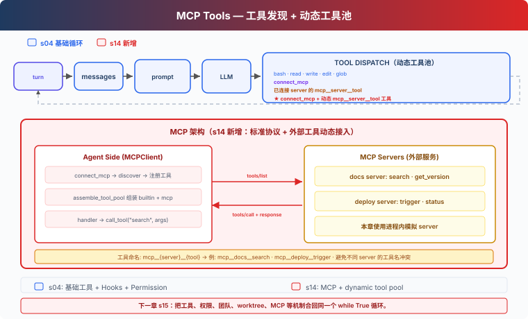

s14: MCP Tools — 发现并调用外部工具
Harness 层：MCP Tools — 连接服务、发现工具，并把它们加入 Agent 的工具循环。
问题
前面的基础工具都直接写在 code.py 里。接入文档系统和部署平台时，我们还可以继续手写 search_docs、deploy_status 和 trigger_deploy，但每增加一个服务，都要重新维护工具定义、参数格式和调用代码。
MCP 把这部分拆成两个角色：server 提供工具列表和调用入口，Harness 负责连接、命名、权限检查，并把发现的工具交给模型。
解决方案

本章从 s04 的五个基础工具和 Hooks 出发，增加三个部分：
MCPClient保存 server 返回的工具定义和调用入口。connect_mcp连接一个 server，并取得它的工具列表。assemble_tool_pool把基础工具与已经连接的 MCP 工具组装到同一个工具池。
课程里的 docs 和 deploy 是进程内模拟 server，用来展示 tools/list、tools/call 和动态工具池。真实 MCP transport 不在本章实现。
工作原理
1. 基础 Agent Loop 不需要改变
每轮调用模型前，Harness 组装当前工具池：
def agent_loop(messages: list):
while True:
tools, handlers = assemble_tool_pool()
response = client.messages.create(
model=MODEL,
system=assemble_system_prompt(),
messages=messages,
tools=tools,
max_tokens=8000,
)
...
连接新 server 后，下一轮 assemble_tool_pool() 会把新工具加入模型输入。工具执行后，结果仍作为 tool_result 追加到 messages。
2. MCPClient 保存发现结果和调用入口
class MCPClient:
def register(self, tool_defs, handlers):
self.tools = list(tool_defs)
self._handlers = dict(handlers)
def call_tool(self, tool_name, args):
handler = self._handlers.get(tool_name)
if not handler:
return f"MCP error: unknown tool '{tool_name}'"
try:
return str(handler(**args))
except Exception as error:
return f"MCP error: {type(error).__name__}: {error}"
register() 对应课程里的工具发现结果，call_tool() 对应调用入口。错误会返回给模型，不会直接结束 Agent Loop。
3. connect_mcp 只负责连接和发现
def connect_mcp(name: str) -> str:
if name in mcp_clients:
return f"MCP server '{name}' already connected"
factory = MOCK_SERVERS.get(name)
if not factory:
return f"Unknown server '{name}'"
server = factory()
mcp_clients[name] = server
...
开始时，模型只看到五个基础工具和 connect_mcp。调用 connect_mcp(name="docs") 后，Harness 保存 docs client。下一轮模型调用会看到：
mcp__docs__search
mcp__docs__get_version
4. 前缀区分不同 server 的同名工具
多个 server 都可能提供 search 或 status。Harness 使用：
mcp__{server}__{tool}
normalize_mcp_name() 把不适合模型工具名的字符替换为下划线。组装工具池时还会检查规范化后的名称冲突和 64 字符长度限制：
prefixed = f"mcp__{safe_server}__{safe_tool}"
if prefixed in origins:
raise ValueError("MCP tool name collision after normalization")
因此 docs.one/get.version 和 docs_one/get_version 不会悄悄映射到同一个名字。
5. 工具定义和 handler 一起加入工具池
tools.append({
"name": prefixed,
"description": tool_def.get("description", ""),
"input_schema": schema,
})
handlers[prefixed] = (
lambda *, client=server, tool=raw_name, **kwargs:
client.call_tool(tool, kwargs)
)
模型看到带前缀的名字；handler 仍使用 server 原始工具名调用 MCPClient。默认参数保存当前 client 和 tool，避免循环里的 lambda 全部指向最后一个工具。
6. 权限由宿主配置决定
MCP server 可以提供 readOnlyHint 或 destructiveHint，但这些信息来自 server，不能直接作为授权依据。本章使用宿主侧策略：
MCP_HOST_POLICY = {
("docs", "search"): "allow",
("docs", "get_version"): "allow",
("deploy", "status"): "allow",
("deploy", "trigger"): "confirm",
}
permission_hook() 根据规范化后的工具名查询这份策略。未配置的外部工具默认需要用户确认；即使 description 写着 readOnly，也不会自动放行。
7. 工具输入错误留在工具边界内
模型可能漏传参数，也可能传入 server 不接受的字段。execute_tool() 和 MCPClient.call_tool() 都会捕获异常，并返回错误 tool_result：
MCP error: TypeError: <lambda>() missing 1 required argument: 'query'
模型可以在下一轮修正参数，而不是让课程脚本直接退出。
相对 s04 的变化
| 组件 | s04 | s14 |
|---|---|---|
| 基础工具 | 五个固定工具 | 保持不变 |
| 工具来源 | code.py 中的定义 |
基础工具加动态发现的 MCP 工具 |
| 工具池 | 固定 TOOLS |
每轮由 assemble_tool_pool() 组装 |
| 外部工具名 | 无 | mcp__{server}__{tool} |
| 权限 | Shell 和路径检查 | 增加宿主侧 MCP 策略 |
| MCP transport | 无 | 使用进程内模拟 server 展示协议边界 |
本章不带入 Task、Background、Cron、Team 或 Worktree。它们会在 s15 的 Integrated Harness 中与 MCP 合并。
试一下
cd learn-claude-code
python s14_mcp_plugin/code.py
输入：
连接 docs server，搜索 agent hooks，并告诉我当前文档 API 版本。
一次典型工具轨迹是：
connect_mcp(name="docs")
mcp__docs__search(query="agent hooks")
mcp__docs__get_version()
再输入：
连接 deploy server，查看 web 服务状态，不要触发部署。
status 会按宿主策略直接执行；trigger 需要用户确认。
接下来
目前，MCP 还是一条独立的课程分支。s15 Integrated Harness 会把基础工具、Hooks、Skills、Context、Memory、Task、Background、Cron、Teams 和 MCP 放进同一个运行时。